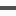

Recruit FAQ
채용에 대한 지원자 여러분의 궁금증을 풀어 드립니다.
-
신입과 경력자별 채용절차는 어떻게 됩니까?
 신입과 경력자별 채용의 절차는 구분이 없습니다. 채용절차는 서류심사 후 1차 실무자 면접 및 필기시험을 실시하며, 성적에 따라 3명을 2차 최종면접대상자로 선정합니다.
신입과 경력자별 채용의 절차는 구분이 없습니다. 채용절차는 서류심사 후 1차 실무자 면접 및 필기시험을 실시하며, 성적에 따라 3명을 2차 최종면접대상자로 선정합니다. -
1차 면접 방식은 어떻게 됩니까?
먼저, 서류통과자에 한하여 1차면접이 실시되며, 면접내용은 필기시험, 외국어 테스트, 직무인터뷰로 진행되며, 면접유형은 그룹면접, 일대일면접, 발표면접(PPT), 토론면접, 저녁심층면접 등 여러 가지로 면접이 진행됩니다.
-
2차 면접방식은 어떻게 됩니까?

1차면접 대상자 중 3명을 선정하여 최종면접이 실시되며, 최종면접은 임원면접으로 업무 적합성, 인성 등을 중점적으로 인터뷰를 합니다.
-
응시자격은 어떻게 됩니까?
당사의 채용은 수시채용, 연중 상시채용으로 나뉩니다.수시 채용은 결원 발생 시에 급한 충원이 필요한 경우,신입 혹은 경력 모집이 수시로 발생하게 되면 홈페이지에 채용 공고를 합니다. 이때 본인의 능력과 적성에 부합하면 지원하여 주시면 됩니다. 연중 사시 채용은 인력 DB에 이력서를 등록해 놓으시면, 당사에서 인력 Pool로 관리하여 필요 시 개별적으로 연락드리는 제도입니다.
-
신입 사원의 응시자격은?
학력과 연령에 제한이 없습니다.남,여에 관계없습니다. (성 차별이 없습니다.) 또한 해외여행에 결격 사유가 없어야 합니다. 남자는 병역 기피 사실이 없어야 합니다.
-
경력 사원의 응시자격은?
팀 특성에 따라 자격 및 대상이 달라질 수 있습니다. 경력 채용 안내는 채용 공고를 참고해 주시고 기타 자세한 문의는 인사 담당자에게 문의해 주시기 바랍니다. ▶ ‘경력 사원’ 지원을 희망하시는 분은 인사 담당자로부터 채용 일정 및 기타 입사 안내를 받으실 수 있습니다.
-
석사인데 지원 가능합니까?
지원대상 자격 요건만 맞으면 가능합니다.과거 지원에 대한 불이익은 없습니다. 다만 현재 특정 팀에서 전형이 진행 중인 지원자 중 희망 팀을 변경하고자 할 경우에는 사전에 인사담당자에게 문의 후 안내를 받으시기 바랍니다.
-
공인 외국어 성적은 필수 사항인가요?
공인 외국어 시험 성적은 참고 자료로서 활용이 됩니다.외국어 점수가 없어도 서류 전형에 문제가 없으니 지원하여 주시기 바랍니다.
-
모집요강에 기재된 전공만 지원가능한가요?
모집요강에 기재된 전공은 해당 직무 수행 시 적합하다고 판단되는 전공을 기재한 것이며, 기타 전공자의 경우에도 지원이 가능합니다.
-
지원시 연령의 제한이 있나요?
저희 회사는 지원 시 연령 제한을 두지 않습니다.
-
졸업예정자는 지원이 불가능 한가요?
신입사원 채용은 일반적으로 8월 졸업예정자 및 기졸업자, 2월 졸업예정자 및 기졸업자를 대상으로 합니다.
-
입사할 때 전공 지식이 많이 필요 하나요?
입사 지원 시 특수직무(생산/품질관리/환경안전 등)와 같이 전문지식이 필요한 경우 외의 직무에 따른 전공제한은 없습니다.
따라서, 특수직무 지원자의 경우 1차 실무진 면접 시 간단히 전공지식을 확인하여 지원자의 역량을 검토합니다. -
자격증이 입사 당락에 중요한가요?
채용 시 자격증은 해당직무 자격증 소지자를 우대하지만, 입사 당락을 결정하지는 않습니다. 특별히 자격증 소지자를 채용코자 하는 직무에 대해서는 모집 공고시 기재됩니다.
-
과거에 불합격한 사람도 다시 지원할수 있나요?
과거에 불합격 하셨던 분도 재지원이 가능합니다.
-
우편이나 방문접수도 가능한가요?
당사는 채용사이트(사람인, 인크루트, 잡코리아 등)를 통한 On-Line 접수만 받고 있습니다. 우편이나 방문접수는 받지 않습니다.
-
지원서 접수를 확인할 수 있나요?
지원서 접수가 완료되면 접수 이후의 진행상황에 대하여 채용 Site 내 전형결과확인란을 통해 직접 확인할 수 있습니다
-
지원시 제출해야 하는 서류는 무엇이며, 언제 제출해야 하나요?
지원 시 제출 서류는 성적 증명서, 졸업(예정) 증명서, 어학 증명서, 자격증 사본, 경력 증명서(경력사원의 경우) 이며, 1차 면접 시 제출하시면 됩니다.
기타 서류는 1차 면접 통과자에 한해 다시 안내해 드립니다. -
기숙사는 제공 되나요?
원거리 거주자(미혼)에 한해 기숙사(인근 아파트)를 제공하고 있습니다.
-
지원서는 어떻게 작성합니까?
당사는 인터넷 채용사이트(사람인, 인크루트, 잡코리아 등)를 통해 온라인 접수만을 받고 있습니다.
지원서는 해당사이트내의 당사양식을 다운 받아 작성하시면 됩니다. -
공인어학성적은 토익만 가능한가요?
공인어학성적은 TOEIC 700점 이상을 서류전형 대상으로 하고 있으며, TOEIC 성적 미 소지자는 TOEFL 또는 HSK 점수를 환산하여 적용하고 있습니다.
-
편입한 경우 대학 입력을 어떻게 해야 하나요?
타대학으로 편입해서 졸업하지 않은 경우 첫학교의 졸업 구분에 “입학”을 선택해 주시기 바랍니다.
-
자기소개에 글자 수 제한이 있나요?
신입의 경우 각 항목당 1,000자 이내로 제한이 있으며, 경력은 2,000자 이내로 작성해 주시기 바랍니다.
연구원의 경우 글자 수 제한이 없습니다 -
신입사원 면접은 어떤 방식으로 진행되나요?
채용 시 면접전형은 1차 실무자면접과 2차 임원면접으로 운영됩니다. 1차 실무자면접은 전문적 지식, 즉시 활용 가능성을 중점 평가하게 됩니다.
또한 다양한 인터뷰 방법론을 선택하여 사전에 알려드릴 것이므로 이에 대한 준비가 필요합니다.
예를 들어 집단토론은 대상자 여러 명에게 한가지의 Topic을 주어 지원자간 토론을 전개시키고, 그 과정에서 지원자들이 보여주는 역량을 관찰하여 평가합니다.
개별 면접의 경우에는 전공지식 및 외국어 능력, 기본자질, 소양 등 다양한 질문을 통해 여러 명의 지원자를 동시에 관찰, 평가하여 업무적성 등을 판단합니다.
2차 임원면접 대상자들은 1차 실무진 면접 합격자를 대상으로 이루어지며 대상자의 당사와의 적합성, 협업 능력, 가치관, 사고, 창의력, 도전/패기 등의 종합적인 인물평가를 합니다. -
경력사원 면접은 어떻게 진행되나요?
신입사원의 경우와 동일한 방법으로 1차 실무자면접과 2차 임원면접으로 운영됩니다. 또한 신입사원 면접 보다는 좀 더 전문적 지식, 경력, 프로젝트, 협업 능력 등에 대해 세부적인 인터뷰를 실행하게 됩니다.